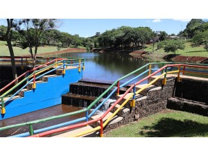
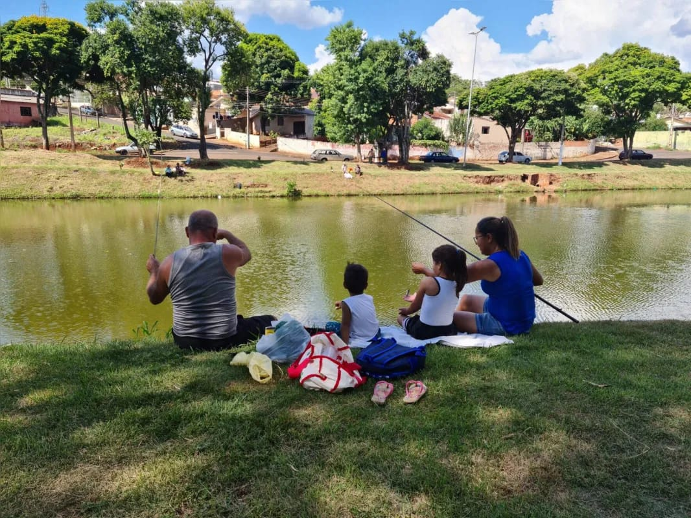
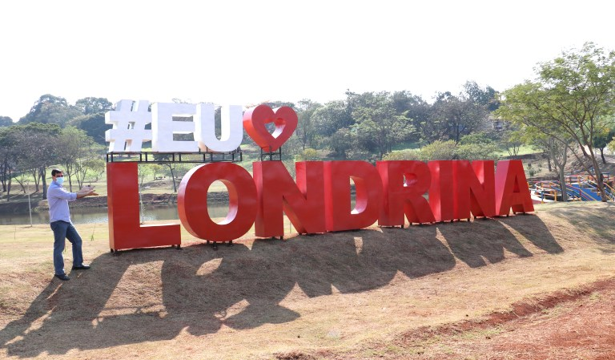
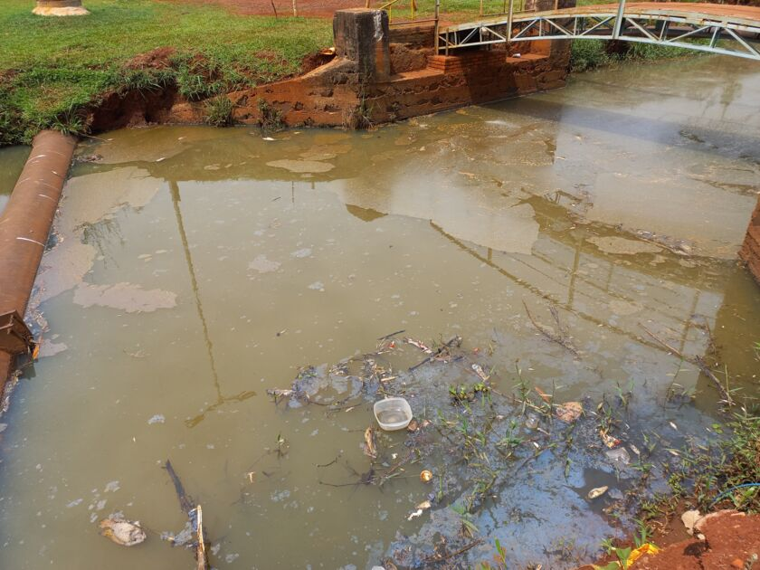

BELEZA NATURAL
REALIDADE

O Lago Preservado
Quando cuidado, o Lago Cabrinha revela toda a sua beleza e riqueza natural.



O que o Cabrinha vem enfrentando
Infelizmente, a degradação causada pelo descuido humano ameaça esse patrimônio natural.
